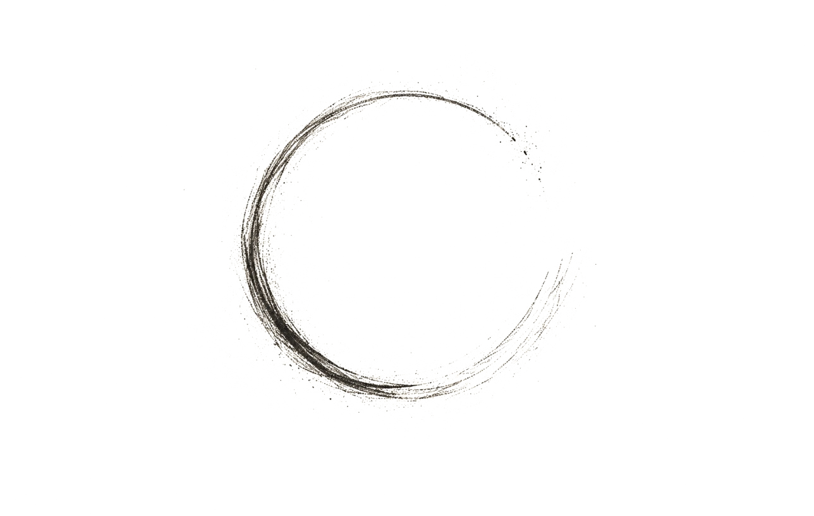

WOLF Ceremonies was born from a deep respect for life, loss and the power of storytelling. It's a place where compassion, authenticity and connection sit at the heart of every ceremony.
My role is to create space - for you to remember, to honour and to say the words that matter.

A gentle and supportive presence when it matters most.
Creating calm within the chaos.
Honouring the meaning in every life.
Holding space for the hard and the beautiful.
Real words. Real People. Real Ceremonies.
My own experience with loss changed the way I understood ceremony. Writing and delivering a eulogy for someone I loved showed me how much can live inside a few carefully chosen words - the memories, the laughter, the smallest details and the things we never want to forget.
It showed me that a meaningful ceremony isn't about finding perfect words. It's about finding the ones that feel true.
That experience stayed with me. It opened my eyes to the importance of honest conversations, thoughtful storytelling and creating a space where people feel truly seen.
With a background in people, connection and a deep curiosity for what makes each life entirely its own, I bring warmth, care and attention to every ceremony I lead.
WOLF Ceremonies is more than a business - it's a calling. It's about people, stories and legacies, and the moments in between.